Drone Survey for the Power Sector
In short: we inspect and survey power assets by drone: transmission and distribution lines, substations, solar plants and wind farms. Radiometric thermal cameras find hotspots and defects, each tagged to its tower or string, and LiDAR maps corridors for new lines (see our transmission line and solar inspection guides). Our thermal team includes a thermographer certified to ISO 9712 Level 2.
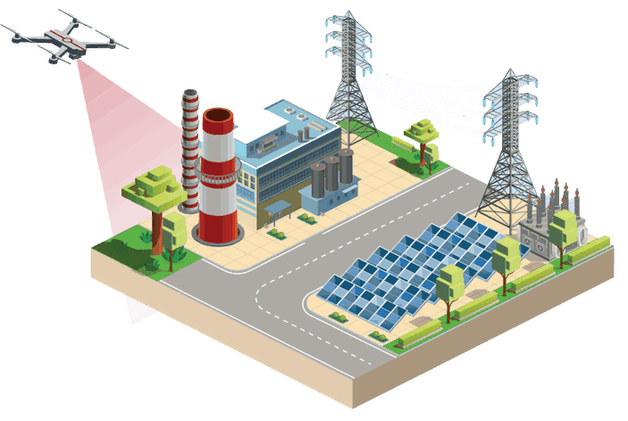
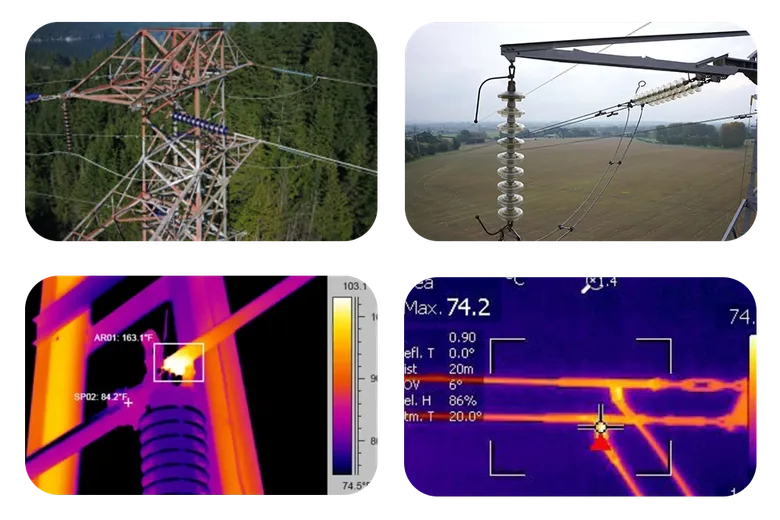
Transmission Lines Inspection
We inspect transmission lines by drone, with artificial intelligence and machine learning automating the process from data capture to the analytical report. For new lines, see transmission line and substation survey and design. For how a drone inspection compares with a foot patrol, read our guide to transmission line drone inspection.
Our transmission line drone surveys encompass a thorough examination of various components, including towers, conductors, insulators, rights of way (ROW), and vibration dampers. By utilising thermal imaging cameras mounted on drones, we can detect hotspots caused by issues such as loose connections, load imbalances, and corrosion, which could lead to temperature variations and potential hazards.
The integration of AI technology enables automatic detection of significant irregularities in transmission lines, allowing our clients to receive actionable insights through detailed analytical reports. With this advanced approach, a single drone crew can cover extensive regions, inspecting approximately 10-15 pylons per day. This streamlined process minimises expenses, reduces manpower requirements, and enhances the overall safety and reliability of electrical transmission systems.
Deliverable: We provide site topography survey reports with grid installation feasibility, Higher-resolution visual images of grids with Detailed Project Reports.
Distribution Line Inspection
Electricity is transferred from the transmission system to the final user via distribution lines. Ordinarily, distribution voltages are moved across short distances in a range of 4 kV to 35 kV. Aerial and Thermal Surveys of distribution lines is a service provided by DATA PKT using AI/ML-integrated drones, generating accurate, inexpensive, useful, and efficient data.
DATA PKT employs specially created drones that can withstand strong electromagnetic forces and are outfitted with Dual Gimbal systems that simultaneously provide an ultra-high-resolution 360-degree view and thermal images.
In our drone surveys of distribution lines we provide Surveys of pillars, conductors, insulators, ROW(rights of way), span losses, Go switches, Split pins, nut bolts, cross arms and stays of distribution lines.
Drones with artificial intelligence (AI) are employed in distribution lines to estimate demand, analyse the reliability of the state's power plant, and find defects in the smart grid and power systems.
Deliverable: We provide site topography survey reports with electricity pillar installation and condition feasibility, Higher-resolution visual images of grids, poles, and other components. Elevation data, Contour map of the site and 3D Model with cloud point.
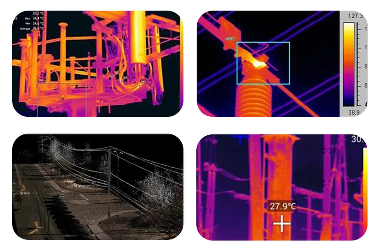
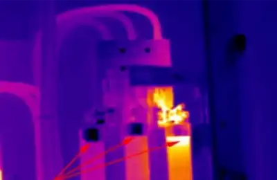
Thermal Surveys of Power Transmission and Distribution Assets
To reduce downtime caused by equipment malfunctions, modern maintenance practices emphasize the implementation of condition-based techniques for monitoring electrical assets. These methods aim to predict the deterioration of various components or vulnerable areas prone to failure.
Thermal survey is one of the most effective ways to find hot spots. Most electrical failures come from faulty components or loose connections, and infrared imaging shows them before they become failures or fire hazards.
Regular thermal surveys give asset managers early warning, so equipment can be repaired before it fails.
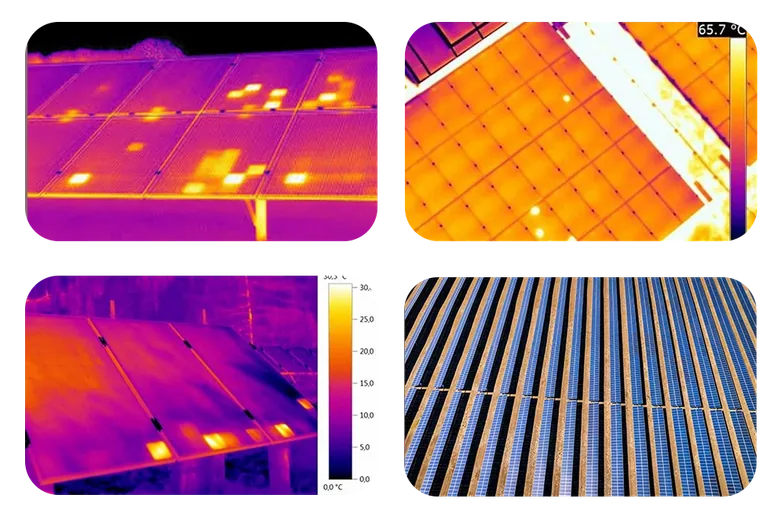
Solar Power Plants
Drones are being used by solar power plants to give an airborne perspective that enables quicker diagnosis of damaged solar panels. Drones equipped with dual-mode high-end thermal cameras and ultra-high-definition video cameras with 16x zoom offer temperature differences and crisp images for quick identification of defective panels, cracks, or shadows. This technology reduces inspection time significantly, allowing for faster maintenance responses and minimized downtime. As a result, solar power plants can maintain optimal efficiency and output.
By utilizing drone technology for solar plant inspections, DATA PKT significantly reduces inspection costs by 30 to 50 percent compared to traditional methods.
Our services provide detailed topological maps and thermograms, identifying issues such as hot spots, cracked panels, and bypass diode failures, enabling prompt maintenance and optimization of solar plant performance. See how we carry out solar plant drone thermography, from flight conditions to the defect report. Before a plant is designed, see our guide to topographic surveys for solar plants, covering contours, grading and drainage.
Choosing a method? Compare drone and manual solar panel inspection, and check what a solar thermography report should include before you commission one.
Deliverables: include geotagged high-resolution visible and thermal infrared images, Orth mosaics with elevation data and AI/ML-based analytics for quick analysis and provide plant efficiency reports.
Wind Farms
Drones are becoming a crucial component of managing, operating, and preserving wind farms. Using drones instead of traditional inspection makes inspecting rotor blades simple. We can now identify the inside of the rotor blade thanks to developments in the thermal system. In one published case study, a drone inspection took about 45 minutes per turbine, against 3 to 6 hours for a rope-access inspection (DJI Enterprise).
Wind turbine blade inspection methods include both surface and subsurface techniques. Surface inspections use visual technologies like sensors and drones to detect fractures, erosion, lightning, and bird strikes. Early detection enables efficient corrective maintenance. Sub-surface examinations use non-destructive methods such as thermal imaging, ultrasound, and electromagnetic waves to detect structural faults in the blades' internal structure, such as damaged shear webs and bonding erosion. Internal inspections, which require professionals to physically climb into the blades, are limited due to height, safety, and efficiency limits, leaving a considerable fraction uninspected, particularly in offshore wind farms.
Our drone inspections detect a wide range of faults in wind turbine blades.
Deliverables: We provide site feasibility and topography survey reports, Higher-resolution visual inspections, Ortho-mosaic, Digital surface model, Digital terrain model with elevation data, a Contour map of the site and a 3D Model with cloud point.
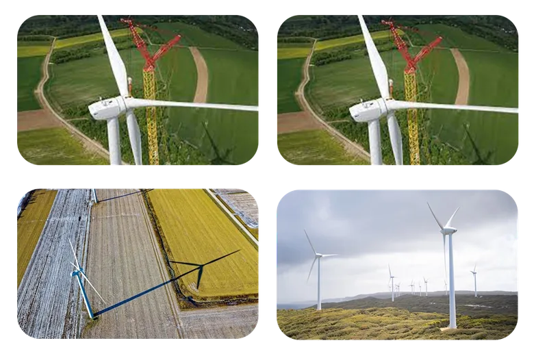
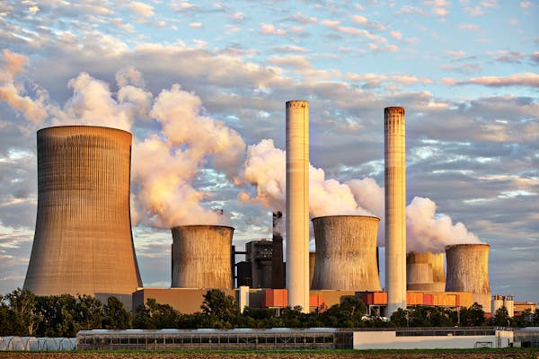
Nuclear Power Plants
Drones play a crucial role in enhancing safety and efficiency at nuclear power stations by providing an effective means of managing potential leaks and assessing equipment integrity without exposing personnel to dangerous levels of radiation. Following natural disasters and weather events, such as hurricanes or earthquakes, nuclear power stations may face structural damage or operational disruptions. In these situations, drone inspections let teams assess damage quickly without sending people into hazardous areas. This is particularly significant considering the potential catastrophic consequences of even minor damage to nuclear facilities.
Unmanned aerial vehicles equipped with specialized sensors and cameras can access areas that are difficult or dangerous for humans to reach, such as rooftops, cooling towers, and reactor containment structures. They can provide high-resolution imagery and data in real-time, allowing operators to quickly identify any issues or anomalies. Additionally, drones can be deployed rapidly, reducing the time required to assess the situation and implement necessary repairs or maintenance activities.
Deliverable: We provide site topography survey reports with environmental impact assessment reports, Higher-resolution visual images, Ortho-mosaic, Digital surface models, Digital terrain models with elevation data, a Contour map of the site and 3D Models with cloud points.
Thermal Power Plant
In thermal power plants, drones carry out thermal surveys of chimneys, monitor flue gas emissions, and inspect boilers, cooling towers, pipelines, tanks and flare stacks, reaching areas that are hard to access and finding defects early to reduce downtime.
Our AI-equipped drones with ultra-high-resolution cameras inspect critical power plant components in detail, finding defects early so maintenance can be planned, downtime reduced and plant life extended.
Deliverable: DATA PKT provides detailed performance reports of thermal plants with Ortho-mosaic, Thermal and Infrared imagery and AI/ML-based analytics to increase the cost efficiency of the power plant.
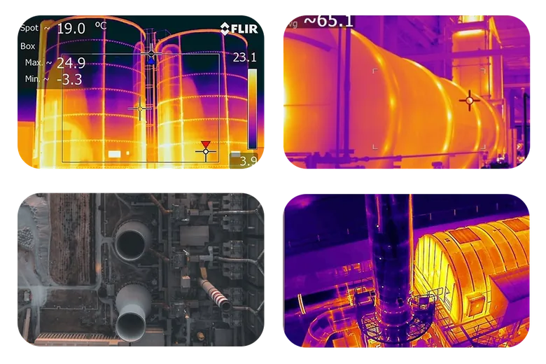
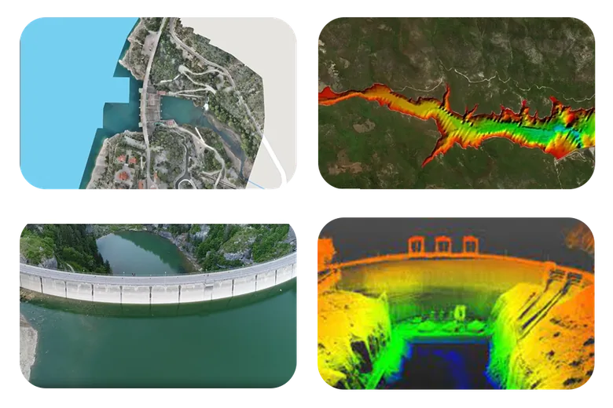
Hydropower Plant
For dams, high-resolution drone imagery allows detailed analysis of the structure, including steep slopes and areas hidden by vegetation, without scaffolding or rope access.
Topographic surveys of the dam site, reservoir, power channel and tunnel provide the base data for planning and construction. Combined with surface and subsurface examination, they help identify fractures and other geological hazards, guide the design of spillway gates, tunnels and surge tanks, and check concrete condition and gate alignment.
Deliverable: DATA PKT provides Ortho-mosaic, Thermal and LiDAR imagery in the required format and AI/ML-based analytics for decision-making of plant efficiency.
Deliverables
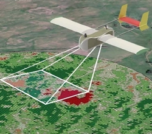
Detailed Project Reporting (DPR)
We offer Detailed Project Reports (DPRs) for the energy sector, providing comprehensive insights and analysis essential for informed decision-making and efficient management of energy infrastructure projects.

DTM
We offer Digital Terrain Models (DTMs) tailored for the energy sector, crucial for installing and inspecting plants and transmission pillars. Our precise models enable thorough assessment and planning, ensuring optimal infrastructure deployment and ongoing maintenance within the energy industry.
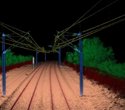
Point Cloud
We offer precise point cloud data for the energy sector, providing detailed 3D representations of infrastructure elements. This information aids in accurate assessments, design optimizations, and efficient decision-making processes for energy projects.

Orthomosaic
We specialize in producing orthomosaics tailored for the energy sector, providing detailed aerial imagery essential for site analysis, infrastructure planning, and ongoing monitoring. Our high-resolution orthomosaics ensure accurate insights for efficient energy sector development and management.
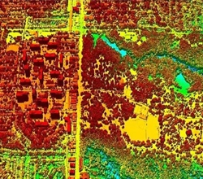
DSM
We deliver Digital Surface Models (DSMs) for the energy sector, essential for planning plant installations and transmission pillar placement. These detailed models offer insights into terrain characteristics, enabling strategic decisions for infrastructure development and deployment.

Aerial Photogrammetry and Videography
Employing aerial photogrammetry and videography enriches energy projects with intricate imagery, essential for planning, monitoring, and documenting activities within the energy sector, facilitating informed decision-making and efficient operations.
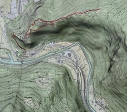
Topographical Survey
Topographic surveys for plant installation and transmission tower placement.

DEM Creation
We offer Digital Elevation Models (DEMs) customized for the energy sector, essential for planning and implementing infrastructure projects. Our accurate DEMs provide detailed elevation data crucial for optimizing site selection, design, and operational efficiency within the energy industry.
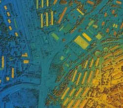
Lidar Survey
We specialize in LiDAR surveys for the energy sector, offering detailed insights essential for infrastructure planning, site assessment, and ongoing monitoring. Our advanced technology ensures precise data collection, facilitating efficient development and maintenance within the energy industry.
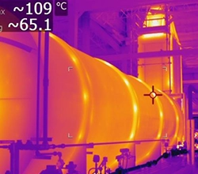
Thermal Image
Thermal imaging that finds anomalies and inefficiencies in energy infrastructure before they become failures.
Our Features
Extensive Coverage
We've covered over 10000 kilometres of energy infrastructure, showcasing our ability to handle projects of any size.
Demonstrates our commitment to comprehensive solutions for pipelines, power lines, and solar farms.
Rapid Survey Capabilities
Our experienced team and advanced survey drones enable us to map about 100 km of linear energy corridor a day by drone photogrammetry, and inspect 10 to 15 pylons a day.
Emphasises our agility and efficiency in meeting project deadlines and supporting quick decision-making.

Expert team
Our dedicated GIS experts ensure prompt processing and analysis of drone survey data, delivering insights on or before agreed deadlines.
Highlights our commitment to timely and reliable service delivery, enabling clients to optimize operations proactively.
Accuracy
Drone surveys tied to DGPS ground control points for survey-grade accuracy.
Provides clients with confidence in making informed decisions for asset monitoring, maintenance planning, and risk assessment.
Clientele
Clients include ONGC, Indian Oil, NTPC, Adani, GAIL, Bharat Petroleum, Hindustan Petroleum and Reliance Industries.
Frequently asked questions
How are solar plants inspected with drones?
A drone carrying a radiometric thermal camera flies over the plant in good sunlight and records the temperature of every module. Hot spots, faulty strings, bypass diode failures and soiling show up as temperature differences and are mapped to their exact location.
What is a transmission line route survey?
It is a survey of the proposed corridor for a power line to choose the best route and tower positions. Drone and LiDAR data show terrain, obstacles, crossings and clearances, which speeds up route selection and tower spotting.
Can drones inspect live transmission lines and substations?
Yes. Drones inspect towers, insulators, conductors and substation equipment from a safe distance without shutting down the line, using zoom and thermal cameras.
What does a solar thermography report include?
A list of every defect with its type, location, temperature difference and severity, thermal and visual images of each one, and a plant map. See our guide to solar thermography reports for details.